자동차정비기사 (2020-08-22 기출문제)
1과목: 일반기계공학
1. 지름 24mm의 환봉에 인장하중이 작용할 경우 최대 허용인장하중(N)은 약 얼마인가? (단, 환봉의 인장강도는 45N/mm2이고, 안전율은 8이다.)
- 2544
- 5089
- 8640
- 2037
(정답률: 48%)

2. 단조가공에 대한 설명으로 틀린 것은?
- 재료의 조직을 미세화한다.
- 복잡한 구조의 소재가공에 적합하다.
- 가열한 상태에서 해머로 타격한다.
- 산화에 의한 스케일이 발생한다.
(정답률: 64%)
3. 바이스, 잭, 프레스 등과 같이 힘을 전달하거나 부품을 이동하는 기구용에 적절 하지 않은 나사는?
- 사각 나사
- 사다리꼴 나사
- 톱니 나사
- 관용 나사
(정답률: 70%)
4. 다음 중 피복아크 용접에서 언더 컷(Under cut)이 가장 많이 나타나는 용접 조건은?
- 저전압, 용접속도가 느릴 때
- 전류 부족, 용접속도가 느릴 때
- 용접속도가 빠를 때, 전류 과대
- 용접속도가 느릴 때, 전류 과대
(정답률: 81%)
5. 유압 작동유의 구비조건으로 옳은 것은?
- 압축성이어야 한다.
- 열을 방출하지 아니하여야 한다.
- 장시간 사용하여도 화학적으로 안정하여야 한다.
- 외부로부터 침입한 불순물을 침전 분리시키지 않아야 한다.
(정답률: 79%)
6. 마이크로미터로 측정할 수 없는 것은?
- 실린더 내경
- 축의 편심량
- 피스톤의 외경
- 디스크 브레이크의 디스크 두께
(정답률: 74%)
7. 금속을 가열하여 용해시킨 후 주형에 주입해 냉각 응고시켜 목적하는 제품을 만드는 것은?
- 주조
- 압연
- 제관
- 단조
(정답률: 86%)
8. 다음 그림과 같은 타원형 단면을 갖는 봉이 인장하중(P)을 받을 때, 작용하는 인장응력은?
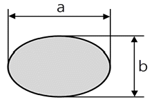
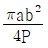
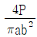
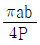
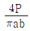
(정답률: 68%)
9. 원통 커플링에서 축 지름이 30mm이고, 원통이 축을 누르는 힘이 50N일 때 커플링이 전달할 수 있는 토크(N·mm)는? (단, 접촉부의 마찰계수는 0.2이다.)
- 471
- 587
- 785
- 942
(정답률: 42%)
10. 두 기어가 맞물려 돌 때 잇수가 너무 적거나 잇수차가 현저히 클 때, 한쪽 기어의 이뿌리를 간섭하여 회전을 방해하는 현상을 방지하기 위한 방법으로 틀린 것은?
- 압력각을 작게 한다.
- 전위기어를 사용한다.
- 이끝을 둥글게 가공한다.
- 이의 높이를 줄인다.
(정답률: 61%)
11. 유압제어 밸브의 종류에서 압력 제어 밸브가 아닌 것은?
- 릴리프 밸브
- 리듀싱 밸브
- 디셀러레이션 밸브
- 카운터 밸런스 밸브
(정답률: 79%)
12. 450℃까지의 온도에서 비강도가 높고 내식성이 우수하여 항공기 엔진 주위의 부품재료로 사용되며 비중은 약 4.51인 것은?
- Al
- Ni
- Zn
- Ti
(정답률: 81%)
13. 마찰부분이 많은 부품에 내마모성과 인성이 풍부한 강을 만들기 위한 열처리 방법에 속하지 않는 것은?
- 침탄법
- 화염 경화법
- 질화법
- 저주파 경화법
(정답률: 63%)
14. 코일 스프링에서 스프링 상수에 대한 설명으로 틀린 것은?
- 스프링 소재 지름의 4승에 비례한다.
- 스프링의 변형량에 비례한다.
- 코일 평균 지름의 3승에 반비례한다.
- 스프링 소재의 전단탄성계수에 비례한다.
(정답률: 63%)
15. 기계재료에서 중금속을 구분하는 기준 은?
- 비중이 0.5 이상인 금속
- 비중이 1 이상인 금속
- 비중이 5 이상인 금속
- 비중이 10 이상인 금속
(정답률: 83%)
16. 구성인선(built-up edge)의 방지책으로 적절한 것은?
- 절삭 속도를 느리게 하고 이송 속도를 빠르게 한다.
- 절삭 속도를 빠르게 하고 윤활성이 좋은 절삭유를 사용한다.
- 바이트의 윗면 경사각을 작게 하고 이송 속도를 느리게 한다.
- 절삭 깊이를 깊게 하고 이송 속도를 빠르게 한다.
(정답률: 80%)
17. 그림과 같이 중앙에 집중 하중을 받고 있는 단순 지지보의 최대 굽힘응력은 몇 kPa인가? (단, 보의 폭은 3㎝이고 높이가 5㎝인 직사각형 단면이다.)
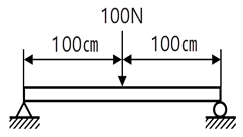
- 4
- 8
- 4000
- 8000
(정답률: 58%)
18. 큰 회전력을 얻을 수 있고 양 방향 회전축에 120 각도로 두 쌍을 설치하는 키는?
- 원뿔 키
- 새들 키
- 접선 키
- 드라이빙 키
(정답률: 75%)
19. 디퓨저(diffuser)펌프, 벌류트(volute)펌프가 포함되는 펌프 종류는?
- 원심 펌프
- 왕복식 펌프
- 축류 펌프
- 회전 펌프
(정답률: 52%)
20. 비틀림 모멘트를 받는 원형 단면축에 발생되는 최대 전단응력에 관한 설명으로 옳은 것은?
- 축 지름이 증가하면 최대전단응력은 감소한다.
- 극단면계수가 감소하면 최대전단응력은 감소한다.
- 가해지는 토크가 증가하면 최대전단응력은 감소한다.
- 단면의 극관성 모멘트가 증가하면 최대 전단응력은 증가한다.
(정답률: 49%)
2과목: 기계열역학
21. 다음은 오토(Otto) 사이클의 온도-엔트로피(T-S) 선도이다. 이 사이클의 열효율을 온도를 이용하여 나타낼 때 옳은 것은? (단, 공기의 비열은 일정한 것으로 본다.)
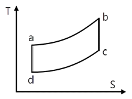
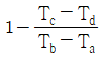
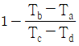
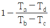
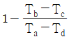
(정답률: 69%)
22. 고온열원(T1)과 저온열원(T2) 사이에서 작동하는 역카르노 사이클에 의한 열펌프(heat pump)의 성능계수는?
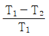
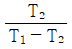
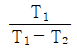
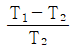
(정답률: 60%)
23. 단열된 노즐에 유체가 10m/s의 속도로 들어와서 200m/s의 속도로 가속되어 나간다. 출구에서의 엔탈피가 2770kJ/㎏일 때 입구에서의 엔탈피는 약 몇 kJ/㎏인가?
- 4370
- 4210
- 2850
- 2790
(정답률: 43%)
24. 냉매가 갖추어야 할 요건으로 틀린 것은?
- 증발온도에서 높은 잠열을 가져야 한다.
- 열전도율이 커야 한다.
- 표면장력이 커야 한다.
- 불활성이고 안전하며 비가연성이어야 한다.
(정답률: 75%)
25. 어떤 물질에서 기체 상수(R)가 0.189kJ/(㎏·K), 임계 온도가 3⑤K, 임계 압력이 7380kPa이다. 이 기체의 압축성 인자(compressibility factor, Z)가 다음과 같은 관계식을 나타낸다고 할 때 이 물질의 20℃, 1000kPa 상태에서의 비체적(v)은 약 몇 m3/㎏인가? (단, P는 압력, T는 절대온도, Pr은 환산압력, Tr은 환산온도를 나타낸다.)
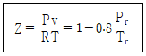
- 0.0111
- 0.0303
- 0.0491
- 0.⑤54
(정답률: 43%)
26. 카르노 사이클로 작동하는 열기관이 1000℃의 열원과 300K의 대기 사이에서 작동한다. 이 열기관이 사이클 당 100kJ의 일을 할 경우 사이클 당 1000℃의 열원으로부터 받은 열량은 약 몇 kJ인가?
- 70.0
- 76.4
- 130.8
- 142.9
(정답률: 52%)
27. 이상기체로 작동하는 어떤 기관의 압축비가 17이다. 압축 전의 압력 및 온도는 112kPa, 25℃이고 압축 후의 압력은 4350kPa이었다. 압축 후의 온도는 약 몇 ℃인가?
- 53.7
- 180.2
- 236.4
- 407.8
(정답률: 35%)
28. 다음 중 스테판-볼츠만의 법칙과 관련이 있는 열전달은?
- 대류
- 복사
- 전도
- 응축
(정답률: 71%)
29. 클라우지우스(Clausius)의 부등식을 옳게 나타낸 것은? (단, T는 절대온도, Q는 시스템으로 공급된 전체 열량을 나타낸다.)
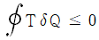
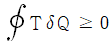
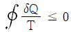
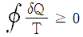
(정답률: 76%)
30. 전류 25A 전압 13V를 가하여 축전지를 충전하고 있다. 충전하는 동안 축전지로 부터 15W의 열손실이 있다. 축전지의 내부에너지 변화율은 약 몇 W인가?
- 310
- 340
- 370
- 420
(정답률: 46%)
31. 이상적인 랭킨사이클에서 터빈 입구 온도가 350℃이고, 75kPa과 3MPa의 압력 범위에서 작동한다. 펌프 입구와 출구, 터빈 입구와 출구에서 엔탈피는 각각 384.4kJ/㎏, 387.5kJ/㎏, 3116kJ/㎏, 2403kJ/㎏이다. 펌프일을 고려한 사이클의 열효율과 펌프일을 무시한 사이클의 열효율 차이는 약 몇 %인가?
- 0.0011
- 0.092
- 0.11
- 0.18
(정답률: 39%)
32. 압력이 0.2MPa, 온도가 20℃의 공기를 압력이 2MPa로 될 때까지 가역단열 압축했을 때 온도는 약 몇 ℃인가? (단, 공기는 비열비가 1.4인 이상기체로 간주 한다.)
- 225.7
- 273.7
- 292.7
- 358.7
(정답률: 33%)
33. 압력(P)-부피(V) 선도에서 이상기체가 그림과 같은 사이클로 작동한다고 할 때 한 사이클 동안 행한 일은 어떻게 나타내는가?
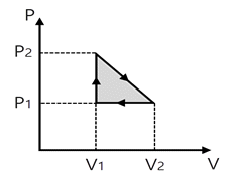
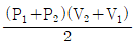
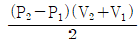
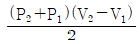
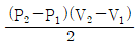
(정답률: 70%)
34. 어떤 습증기의 엔트로피가 6.78kJ/(㎏·K)라고 할 때 이 습증기의 엔탈피는 약 몇 kJ/㎏인가? (단, 이 기체의 포화액 및 포화증기의 엔탈피와 엔트로피는 다음과 같다.)
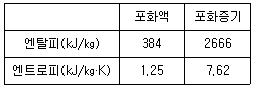
- 2365
- 2402
- 2473
- 2511
(정답률: 35%)
35. 이상기체 2㎏이 압력 98kPa, 온도 25℃ 상태에서 체적이 0.5m3였다면 이 이상기체의 기체 상수는 약 몇 J/(㎏·K)인가?
- 79
- 82
- 97
- 102
(정답률: 58%)
36. 어떤 유체의 밀도가 741㎏/m3이다. 이 유체의 비체적은 약 몇 m3/㎏인가?
- 0.78×10-3
- 1.35×10-3
- 2.35×10-3
- 2.98×10-3
(정답률: 68%)
37. 기체가 0.3MPa로 일정한 압력 하에 8m3에서 4m3까지 마찰 없이 압축되면서 동시에 500kJ의 열을 외부로 방출하였다면 내부에너지의 변화는 약 몇 kJ인가?
- 700
- 1700
- 1200
- 1400
(정답률: 46%)
38. 다음 중 강도성 상태량(intensive property)이 아닌 것은?
- 온도
- 내부에너지
- 밀도
- 압력
(정답률: 70%)
39. 이상적인 교축과정(throttling process)을 해석하는데 있어서 다음 설명 중 옳지 않은 것은?
- 엔트로피는 증가한다.
- 엔탈피의 변화가 없다고 본다.
- 정압과정으로 간주한다.
- 냉동기의 팽창밸브의 이론적인 해석에 적용될 수 있다.
(정답률: 60%)
40. 100℃의 구리 10㎏을 20℃의 물 2㎏이 들어 있는 단열 용기에 넣었다. 물과 구리 사이의 열전달을 통한 평형 온도는 약 몇 ℃인가? (단, 구리 비열은 0.45kJ/(㎏·k), 물 비열은 4.2kJ/(㎏·k)이다.)
- 48
- 54
- 60
- 68
(정답률: 38%)
3과목: 자동차기관
41. 기관의 회전수가 5000rpm이고, 회전 토크가 6㎏·m일 때 축 동력(㎾)은 약 얼마인가?
- 84.7
- 30.8
- 25.1
- 20.9
(정답률: 53%)
42. 엔진의 분류에서 내연기관이 아닌 것은?
- 스털링 엔진
- 디젤 엔진
- 가솔린 엔진
- 가스터빈
(정답률: 66%)
43. 와류실식 디젤엔진 연소실의 장점으로 틀린 것은?
- 엔진의 사용 회전속도 범위가 넓다.
- 분사압력이 낮아도 된다.
- 평균유효압력이 낮다.
- 고속운전이 원활하다.
(정답률: 64%)
44. 대기환경보전법령상 휘발유 사용 자동차의 배출가스를 검사하는 부하검사방법은? (단, 운행차 정밀검사 방법·기준 및 검사대상 항목을 적용한다.)
- Lug-Down 3 모드
- Lug-Down 2 모드
- ASM2525 모드
- KD147 모드
(정답률: 73%)
45. 소음기(muffler)의 소음저감 방법으로 틀린 것은?
- 단열재를 사용하는 방법
- 음파를 간섭시키는 방법
- 공명에 의한 방법
- 배기가스를 냉각시키는 방법
(정답률: 53%)
46. 가솔린 엔진의 혼합비와 배기가스 배출 특성의 관계 그래프에서 (가), (나), (다)에 알맞은 유해가스를 순서대로 나타낸 것은?
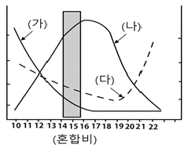
- HC, CO, NOx
- CO, NOx, HC
- HC, NOx, CO
- CO, HC, NOx
(정답률: 65%)
47. 실린더의 압축 상사점을 판별하는 역할을 하며 주로 홀 센서 방식을 이용하여 실린더의 연료 분사 순서를 결정하는 것은?
- 노크 센서
- 스로틀 포지션 센서
- 크랭크 축 위치 센서
- 캠축 위치 센서
(정답률: 50%)
48. 전자제어 가솔린엔진에서 운전 중 연료 분사를 중단하는 경우로 가장 적합한 것은?
- 타행 상태일 때
- 변속 충격 발생 시
- 산소센서가 고장일 때
- 퍼지 컨트롤 밸브가 누설될 때
(정답률: 55%)
49. 자동차 연료로써 압축천연가스(CNG)의 장점으로 틀린 것은?
- 질소산화물의 발생이 적다.
- 탄화수소의 점유울이 높다.
- CO 배출량이 적다.
- 옥탄가가 높다.
(정답률: 62%)
50. 전자제어 가솔린 연료분사장치에서 인젝터 분사량을 결정하는 것은?
- 연료 압력
- 인젝터 분사구멍의 크기
- 인젝터 니들밸브의 양정
- 인젝터 니들밸브의 개방시간
(정답률: 79%)
51. 엔진 실린더의 마모원인이 아닌 것은?
- 커넥팅 로드 어셈블리에 의한 마멸
- 혼합공기 중의 이물질에 의한 마멸
- 농후한 혼합기에 의한 마멸
- 연소생성물에 의한 마멸
(정답률: 69%)
52. 유압식 밸브 리프터의 특징으로 틀린 것은?
- 밸브 간극을 점검·조정하지 않아도 된 다.
- 윤활장치가 고장이 나면 엔진의 작동이 정지된다.
- 밸브 개폐시기를 정확히 조절하나 작동 소음이 발생한다.
- 오일이 완충작용을 하므로 밸브기구의 내구성이 향상 된다.
(정답률: 50%)
53. 전자제어 가솔린 분사장치에서 산소센서 사용 시 공연비에 대한 피드백 제어의 해제 조건이 아닌 것은?
- 시동 시
- 급가속 시
- 전부하 시
- 중, 정속 주행 시
(정답률: 73%)
54. 크랭크 각 센서의 역할에 대한 설명으로 틀린 것은?
- 이론 공연비를 결정한다.
- 크랭크각 위치를 감지한다.
- ECU는 이 신호를 기초로 하여 엔진 회전속도를 연산한다.
- 연료분사 시기는 이 신호를 기본으로 결정 된다.
(정답률: 68%)
55. 전자제어 디젤엔진에서 시동 OFF 시 디젤링 현상을 방지하거나 EGR 작동 시 배기가스를 보다 정밀하게 제어하기 위한 喜입공기 제어장치는?
- 공기 제어 밸브
- 가변 흡기 장치
- 배기가스 후처리 장치
- ISC 액추에이터
(정답률: 45%)
56. 비열비 1.4의 공기를 동작 유체로 하는 디젤엔진에서 압축비 15, 단절비 2일 때 이론 열효율(%)은?
- 38
- 48
- 60.4
- 11A
(정답률: 54%)
57. 질소산화물(NOx) 측정 방법으로 옳은 것은?
- 모어스 시험법
- 화염이온 감지법
- 비분산 적외선식법
- 화학 루미네선스 감지법
(정답률: 64%)
58. 실제 흡입된 실린더 내의 공기 질량을 이론적으로 喜입 가능한 공기의 질량으로 나눈 것은?
- 기계효율
- 정미효율
- 정격효율
- 체적효율
(정답률: 65%)
59. 디젤엔진의 노크 발생에 영향을 미치는 주요변수로 짝지어진 것은?
- 압축비, 연료의 휘발성, 옥탄가
- 연료의 착화성, 압축비, 분사시기
- 연료의 착화성, 연료분사량, 옥탄가
- 연료의 휘발성, 배기구 형상, 연소실벽 온도
(정답률: 77%)
60. VGT(Variable Geometry Turbocharger) 방식의 과급장치에 VGT제어를 위해 ECU에 입력되는 요소가 아닌 것은?
- 대기압 센서
- 노킹 센서
- 부스터 압력 센서
- 차속 센서
(정답률: 46%)
4과목: 자동차새시
61. 지름 40㎝의 조향 훨(Steering wheel)을 100N의 힘으로 회전 시켰을 때 웜기어비가 20：1이라고 하면, 이때 섹터축(sector shaft)에 작용하는 회전토크(N·m)는? (단, 기계효율은 90%이다)
- 260
- 320
- 360
- 420
(정답률: 40%)
62. 댐퍼클러치 제어와 관련된 센서가 아닌 것은?
- 유온 센서
- 가속 페달 스위치
- 산소센서(O2센서)
- 스로틀 포지션 센서(TPS)
(정답률: 62%)
63. 자동차 급제동 시 뒷바퀴가 앞바퀴보다 먼저 고착됨으로써 스핀발생으로 인한 사고 유발 문제점을 해소하기 위해 뒷바퀴와 앞바퀴를 동일하게 제어하거나 뒷바퀴가 늦게 고착되도록 제어하는 것은?
- ABS
- BAS
- EBD
- HBA
(정답률: 60%)
64. 고속으로 회전하는 회전체는 그 회전축을 일정하게 유지하려는 성질을 나타내는 효과는?
- 자이로 효과
- NTC 효과
- 피에조 효과
- 자기유도 효과
(정답률: 58%)
65. 자동차 검사기준 및 방법에 의한 조향 장치의 검사기준으로 틀린 것은?
- 동력조향 작동유의 유량이 적정할 것
- 조향계통의 변형·느슨함 및 누유가 없을 것
- 조향바퀴 옆미끄럼량은 1m 주행에 5mm 이내일 것
- 클러치 페달, 변속기 레버 등이 조향 핸들 중심축으로부터 각 500mm 이내에 설치되어 있을 것
(정답률: 62%)
66. 페달에 수평방향으로 1400N의 힘을 가하였을 때 피스톤의 면적이 10cm2라 하면 이때 형성되는 유압(N/cm2)은 얼마인가?
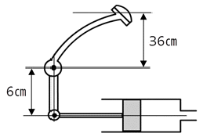
- 640
- 840
- 8400
- 9800
(정답률: 67%)
67. 수동변속기에서 기어 변속을 할 때 심한 마찰음이 발생하는 원인으로 적절한 것은?
- 록킹 볼 마멸
- 싱크로나이저 고장
- 크랭크축의 정렬 불량
- 변속기 입력축의 정렬 불량
(정답률: 60%)
68. 주 제동장치인 풋 브레이크(foot brake)의 빈번한 작동으로 인한 과열을 방지하기 위하여 사용하는 감속제동장치(제 3브레이크)가 아닌 것은?
- 유압감속기
- 배력 브레이크
- 배기 브레이크
- 와전류 감속기
(정답률: 49%)
69. 앞 차축과 조향너클 설치에 따른 조향 장치 분류가 아닌 것은?
- 마몬형
- 르모앙형
- 엘리옷형
- 역르모앙형
(정답률: 62%)
70. 토크컨버터의 성능곡선에 사용되는 식으로 옳은 것은?
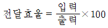
- 토크비 = 터빈출력토크/펌프입력토크
- 토크비 = 펌프측의 회전수/터빈축의 회전수
- 전달토크 = 클러치유효반경 × 전압력
(정답률: 58%)
71. 브레이크 드럼의 일반적인 점검사항이 아닌 것은?
- 드럼의 두께
- 드럼의 직경차
- 드럼의 진원도
- 드럼의 마찰 계수
(정답률: 58%)
72. 차동기어 구성품 중 직진 시 자전을 하지 않고 공전만 하는 것은?
- 차동 피니언
- 선기어
- 차동기어 케이스
- 구동 피니언 기어
(정답률: 58%)
73. 고속 주행 시 타이어의 노면 접지부에서 하중에 의해 발생된 변형이 접지 이후에도 바로 복원되지 못하고 진동하는 현상은?
- 시미 현상
- 동적 비대칭 현상
- 스탠딩 웨이브 현상
- 하이드로플레이닝 현상
(정답률: 68%)
74. 타이어 소음의 일종으로 마찰면에서 발생하는 자력 진동이 원인이며 구동, 제동 및 선회하면서 타이어가 미끄러질 때 발생하는 소음은?
- 스퀼
- 비트
- 탄성
- 하시니스
(정답률: 72%)
75. 전자제어 현가장치(ECS) 중 Active ECS의 효과로 옳은 것은?
- 급 가·감속 시 연료 절약 효과
- 조향 안정성과 승차감 향상 효과
- 안정된 핸들로 가벼운 조작 효과
- 부드러운 운전만을 위한 속업쇼버의 효과
(정답률: 59%)
76. 차체 자세 제어장치(Vehicle dynamic control system)가 장착된 차량의 제어 종류가 아닌 것은?
- ABS 제어
- 요 모멘트 제어
- 자동 감속 제어
- 안티 바운싱 제어
(정답률: 45%)
77. 앞바퀴에 작용하는 코너링 포스가 커서, 차량의 선회반경이 점점 작아지는 현상은?
- 트램핑
- 앤티 록크
- 오버 스티어링
- 언더 스티어링
(정답률: 70%)
78. 하이브리드 자동차 회생 제동시스템에 대한 설명으로 틀린 것은?
- 브레이크를 밟을 때 모터가 발전기 역할을 한다.
- 하이브리드 자동차에 적용되는 연비향상 기술이다.
- 감속 시 운동에너지를 전기 에너지로 변환하여 회수 한다.
- 회생제동을 통해 제동력을 배가시켜 안전에 도움을 주는 장치이다.
(정답률: 66%)
79. 전자제어 현가장치에서 선회 주행 시원심력에 의한 차체의 흔들림을 최소로 하여 안전성을 개선하는 제어기능은?
- 앤티 롤링
- 앤티 다이브
- 앤티 스쿼트
- 앤티 드라이브
(정답률: 64%)
80. 브레이크가 작동할 때 브레이크 페달 행정이 변화되는 원인이 아닌 것은?
- 브레이크액 라인에 공기 유입
- 패드 또는 디스크에 오일 묻음
- 브레이크액 라인에서 오일 누설
- 푸시로드와 마스터 실린더의 간극과도
(정답률: 57%)
5과목: 자동차전기
81. 전기자 전류가 20A일 때 10kgf·m의 토크를 내는 직권 전동기가 있다. 이 전동기의 전기자 전류가 40A일 때의 토크(kgf·m)는?
- 20
- 30
- 40
- 50
(정답률: 35%)
82. 다음 중 파워 릴레이 어셈블리에 설치되며 인버터의 커패시터를 초기 충전할 때 충전 전류에 의한 고전압 회로를 보호하는 것은?
- 프리 차저 레지스터
- 메인 릴레이
- 안전 스위치
- 부스 바
(정답률: 62%)
83. 주행 중 계기판의 충전경고등이 점등될 때 고장원인으로 거리가 가장 먼 것은?
- 배터리의 노후
- 충전계통 퓨즈 단선
- 발전기 벨트의 절손 또는 장력 부족
- 발전기 관련 배선의 단선 또는 단락
(정답률: 64%)
84. 자동차용 교류(AC) 발전기에 대한 설명으로 옳은 것은?
- 발전기 회전수는 엔진 회전수와 같다.
- 스테이터 코일에서 발생하는 전류는 직류이다.
- 자동차에 사용되는 발전기는 주로 3상 교류 발전기이다.
- 회전하는 자석의 주위에 1조의 스테이터 코일로 발전을 한다.
(정답률: 66%)
85. 차체 자세제어장치에서 사용되는 센서가 아닌 것은?
- 조향 핸들 각속도 센서
- 마스터 실린더 압력 센서
- 요-레이트 센서
- PPD 센서(승객감지 센서)
(정답률: 55%)
86. 보조제동등의 설치기준으로 틀린 것은?
- 너비 방향 : 보조제동등의 기준점은 수직 종단면에 최대 150mm 이하에 설치 할 것
- 너비 방향 : 보조제동등의 기준점은 자동차의 중앙 수직 종단면에 위치 할 것
- 높이 방향 : 보조제동등의 발광면 최하단 수평면은 제동등의 발광면 최상단 수평면보다 낮게 설치할 것
- 높이 방향 : 보조제동등의 발광면 최하단 수평면은 뒷면 창유리 노출면 최하단 아래 방향으로 150mm 이하이거나 지상에서 850mm 이상일 것
(정답률: 44%)
87. 각종 전자제어 주행 안전장치에 사용되는 센서 및 장치로 거리가 가장 먼 것은?
- 차압 센서
- 전면 카메라
- 전방 레이더 센서
- 후측방 초음파 센서
(정답률: 76%)
88. 가솔린 엔진용 점화코일에 대한 설명으로 틀린 것은?
- 보통 1차 코일은 2차 코일보다 권수가 적다.
- 1차 코일은 2차 코일에 비해 코일의 단면적이 크다.
- 1차 코일의 전류를 차단하면 2차 코일에 큰 유도전압이 발생한다.
- 1차 코일에 전류가 흐르고 있으면 2차 코일에 유도전압이 발생한다.
(정답률: 50%)
89. 전조등 시스템의 오토 레벨링에 대한 설명이 아닌 것은?
- 커브를 선회할 때 전조등이 선회한 방향으로 움직이는 기능이 있다.
- 화물적재, 상차 등 차량 정적 조건에 따른 보상 기능이 있다.
- 차량의 기울기 조건에 대한 헤드램프 로우 빔의 보상 기능이 있다.
- 급제동, 급가속 등 차량 동적인 조건에 따른 보상 기능이 있다.
(정답률: 45%)
90. 기동전동기가 3000rpm일 때 발생한 회전력이 5kgf·m이면 기동전동기의 출력(PS)은 약 얼마인가?
- 19
- 21
- 23
- 25
(정답률: 48%)
91. 자동차의 앞면에 적색의 등하, 반사기 또는 방향지시등과 혼동하기 쉬운 점멸 하는 등화를 설치할 수 없는 자동차는?
- 긴급자동차
- 화약류 운송용 자동차
- 어린이 운송용 승합자동차
- 다목적(RV) 승용자동차
(정답률: 68%)
92. 도난 경계 모드 진입에 필요한 조건으로 틀린 것은?
- 후드 스위치가 닫혀 있을 것
- 각 도어 스위치가 닫혀 있을 것
- 프런트 윈도우 닫힘 신호가 있을 것
- 각 도어 잠금 스위치가 잠겨 있을 것
(정답률: 75%)
93. 타임차트(Time chart) 에 대한 설명으로 옳게 짝지어진 것은?
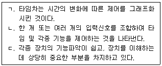
- ㄱ, ㄴ
- ㄱ, ㄷ
- ㄴ, ㄷ
- ㄱ, ㄴ, ㄷ
(정답률: 66%)
94. 오토라이트(auto light)에 대한 설명으로 틀린 것은?
- 조도센서 내의 저항이 낮을 때는 주위가 어두울 때이다.
- 조도센서 내의 광전도 셀 주위 밝기에 따라 저항 값이 변하는 특성을 가지고 있다.
- 조도센서 내의 광전도 셀을 이용하여 미등과 전조등을 자동으로 점등 및 소등시키는 장치이다.
- 제어릴레이 내부에는 미등과 전조등의 회로를 구성하는 2개의 비교기가 변환소자의 전압과 회로의 기준전압을 비교한다.
(정답률: 69%)
95. 하이브리드 자동차에서 배터리 시스템의 열적, 전기적 기능을 제어 또는 관리하고 배터리 시스템과 다른 차량 제어기와의 사이에서 통신을 제공하는 전자장치는?
- SOC(State Of Charge)
- HCU(Hybrid Control Unit)
- HEV(Hybrid Electric Vehicle)
- BMS(Battery Management System)
(정답률: 60%)
96. KS R 0121 에 의한 하이브리드의 동력 전달 구조에 따른 분류가 아닌 것은?
- 병렬형 HV
- 복합형 HV
- 동력집중형 HV
- 동력분기형 HV
(정답률: 52%)
97. KS 규격 연료전지기술에 의한 연료전지의 종류로 틀린 것은?
- 고분자 전해질 연료 전지
- 액체 산화물 연료전지
- 인산형 연료 전지
- 알칼리 연료 전지
(정답률: 57%)
98. 하이브리드 자동차의 고전압 장치 점검 시 주의 사항으로 틀린 것은?
- 조립 및 탈거 시 배터리 위에 어떠한 것도 놓지 말아야 한다.
- 이그니션 스위치를 OFF하면 고전압에 대한 위험성이 없어진다.
- 취급 기술자는 고전압 시스템에 대한 검사와 서비스 교육이 선행되어야 한다.
- 고전압 배터리는 "고전압" 주의 경고가 있으므로 취급 시 주의를 기울어야 한다.
(정답률: 82%)
99. 전자제어 엔진의 점화제어장치와 관련된 구성품이 아닌 것은?
- 점화코일
- 인젝터 드라이버
- 파워 트랜지스터
- 크랭크 축 위치 센서
(정답률: 60%)
100. 자동차 라디오 잡음에 대한 감소 대책으로 틀린 것은?
- 다이오드를 사용하여 억제한다.
- 코일과 콘덴서를 사용하여 억제한다.
- 고주파 전류를 증가시켜 잡음을 억제한다.
- 고압선을 저항식 고장력선으로 하여 억제한다.
(정답률: 62%)
최대 허용 인장하중 = (인장강도 × 단면적) / 안전율
여기서 단면적은 환봉의 단면적인 πr2 이므로,
최대 허용 인장하중 = (45 × π × 122) / 8
= 2544 (단위: N)
따라서 정답은 "2544"이다.